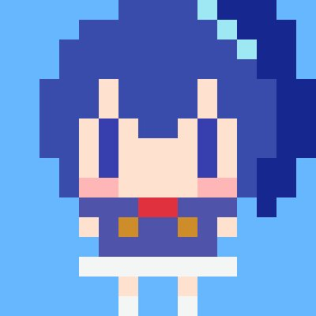

 an odd fellow
This is roronya's blog
Articles
- 2024-03-07
- softwareの語源
- 2024-02-23
- RecruitTechConference2024で登壇した
- 2024-02-20
- YAPC::Hiroshima
2024に参加した
About me
- Author
- @roronya
- A Software Engineer in Japan
- Experience
- 2017-, Recruit Co., Ltd., software engineer -> techlead -> engineer manager
- 2016, Recruit Co., Ltd., internship
- 2015, NTT Laboratory, internship
- 2014, Security Camp 2014, participant
- 2012-2017, Tsukaeru.net Co.,Ltd., part time technical support engineer
- Education
- 2015-2017, Shinshu University, Master of Computer Engineering
- 2011-2015, Shinshu University, Bachelor of Computer Engineering
-